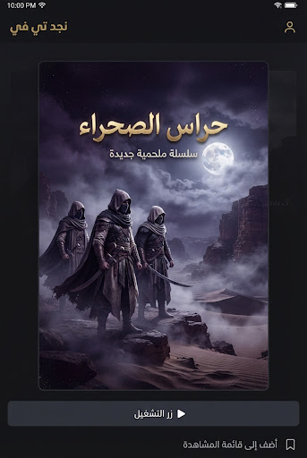
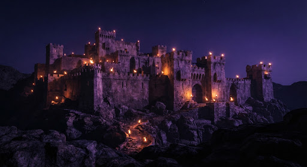
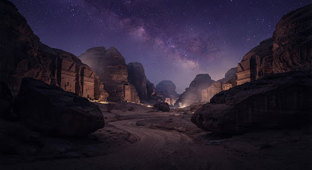
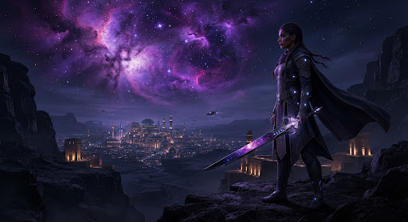
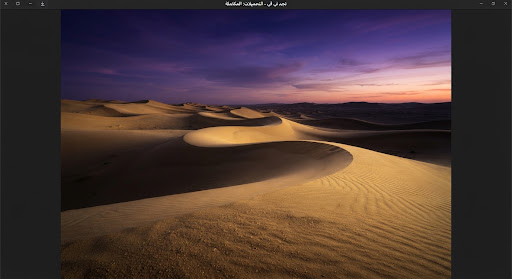

مسلسل
فرسان الظلال
حلقتان · 1.2 جيجابايت
download_done
جاهز للمشاهدة

48:12الحلقة 1: البداية
48 دقيقة · 580 م.ب

52:40الحلقة 2: المعبر
52 دقيقة · 620 م.ب

حلقتان · 1.2 جيجابايت

48:1248 دقيقة · 580 م.ب

52:4052 دقيقة · 620 م.ب

4K 2:10:00ساعتان و 10 دقائق · 1.8 جيجابايت

HDR 1:15:30ساعة و 15 دقيقة · 740 م.ب
سيتم حذف هذا العمل من ذاكرة جهازك لتوفير المساحة. يمكنك إعادة تحميله في أي وقت طالما أنه متاح على نجد تي في.